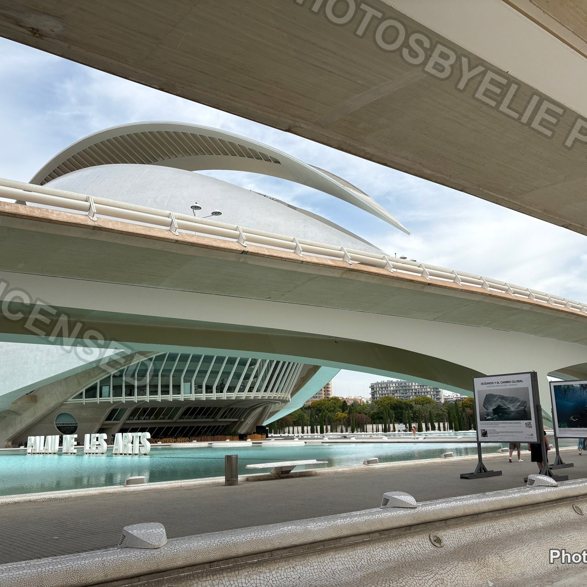
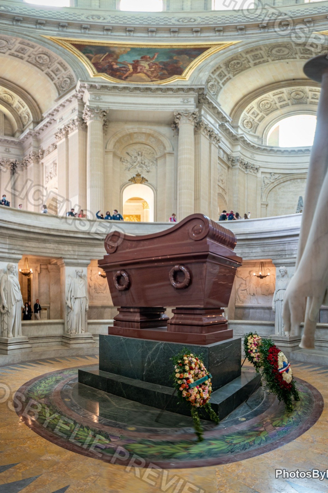
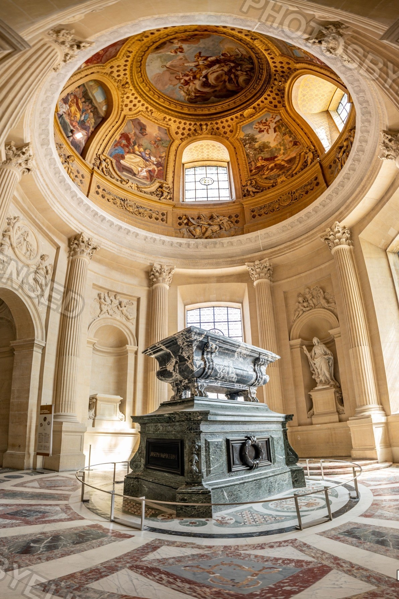
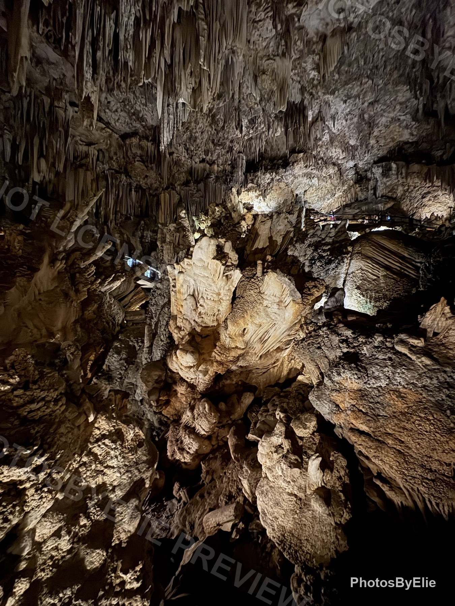
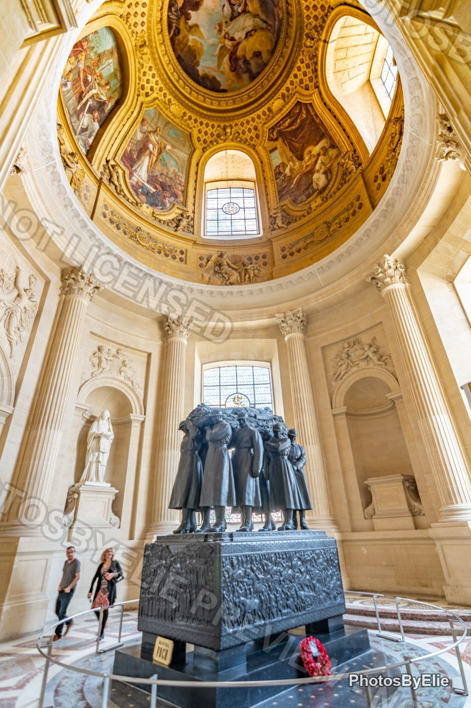
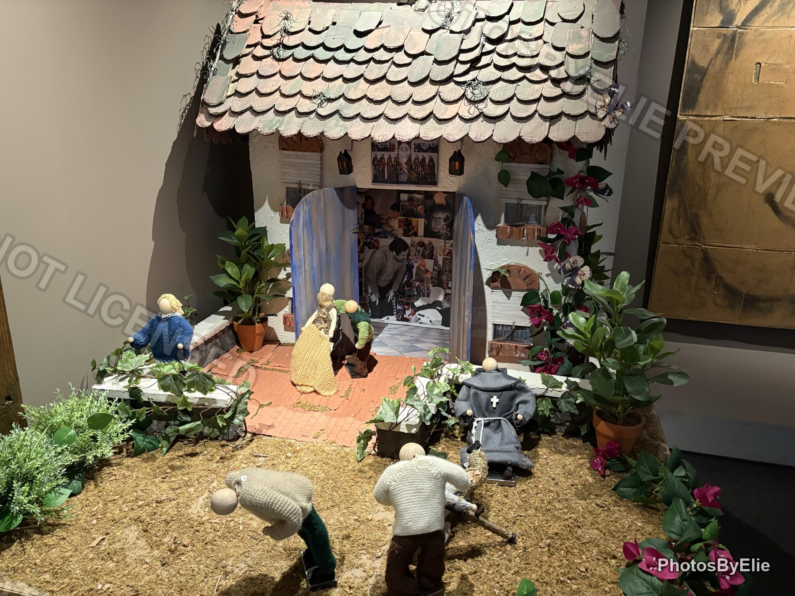

Candidate 01 / Editorial Atlas
Photos By Elie
Travel the archive by place, light, and mood. This brighter first screen puts destination photography, country routes, and fast browsing above the fold.
8 collections
2 recent stories
1 private client door
Fresh story
Valencia aquarium architecture

Open Pinterest feature
Paris: Invalides
Candidate 02 / Darkroom Flow
Photos By Elie
A cinematic archive with gallery motion built in. The first screen acts like a live contact sheet without burying navigation.
Featured route
Paris interiors
Open story
Candidate 03 / Collector Desk
Photos By Elie
A warmer home for choosing, saving, and sending photos. This version turns the homepage into a practical browsing desk with search and client action upfront.

Nerja / Earth light
Paris / Monumental
Cordoba / Pattern
Next browse
Start with country, then narrow by mood.
Photos By Elie
Featured on Pinterest
Recent Pinterest features
Find photos
Catalog ready